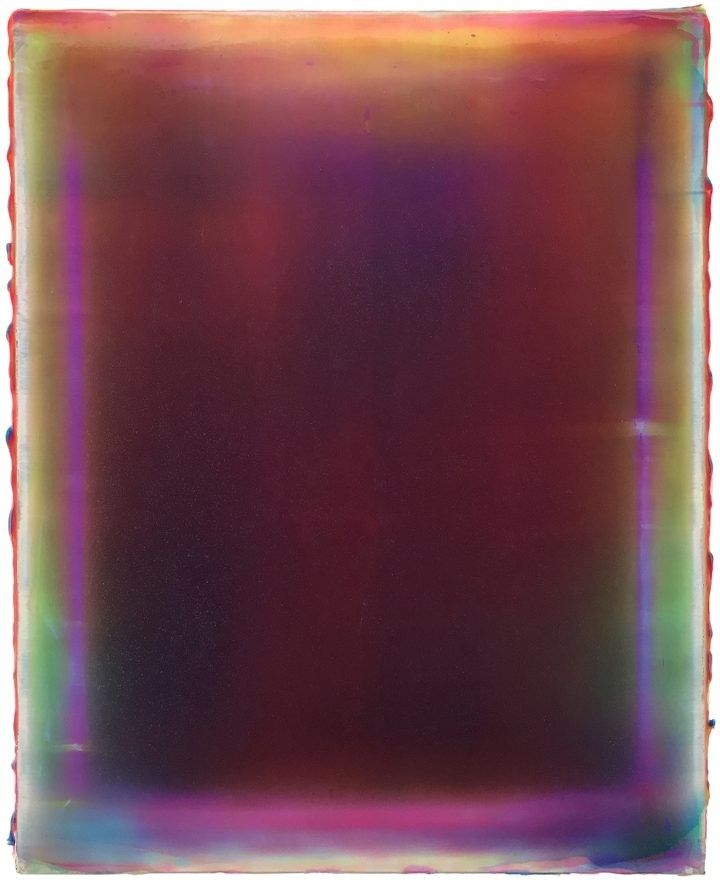

CARNAL DESIRES

Like a moth to a flame, I drew close to the fire—
Fantasies become my desires.
Riddled with a false sense of touch I alone am at its mercy.

Grounded; as I slowly devour what remains.
A glutton for time. As I beg for His mercy before the sun shines.
It is the inevitable.